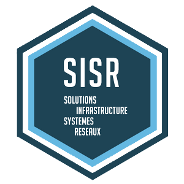

Le BTS option SLAM (Solutions Logicielles et Application Métiers) prépare à la mise en place.
Le BTS option SISR permet d'acqurir des compétence dans 3 domaines d'activités.

| SISR |  | C'est une formation à visée professionnelle qui rend tous les métiers de l'informatique accessibles, car il répond à la diversité et la variété des métiers de l'informatique. |
| SLAM | vous prépare à la mise en place de solutions informatiques au sein des entreprises, en vue de gérer efficacement un parc informatique complet. |